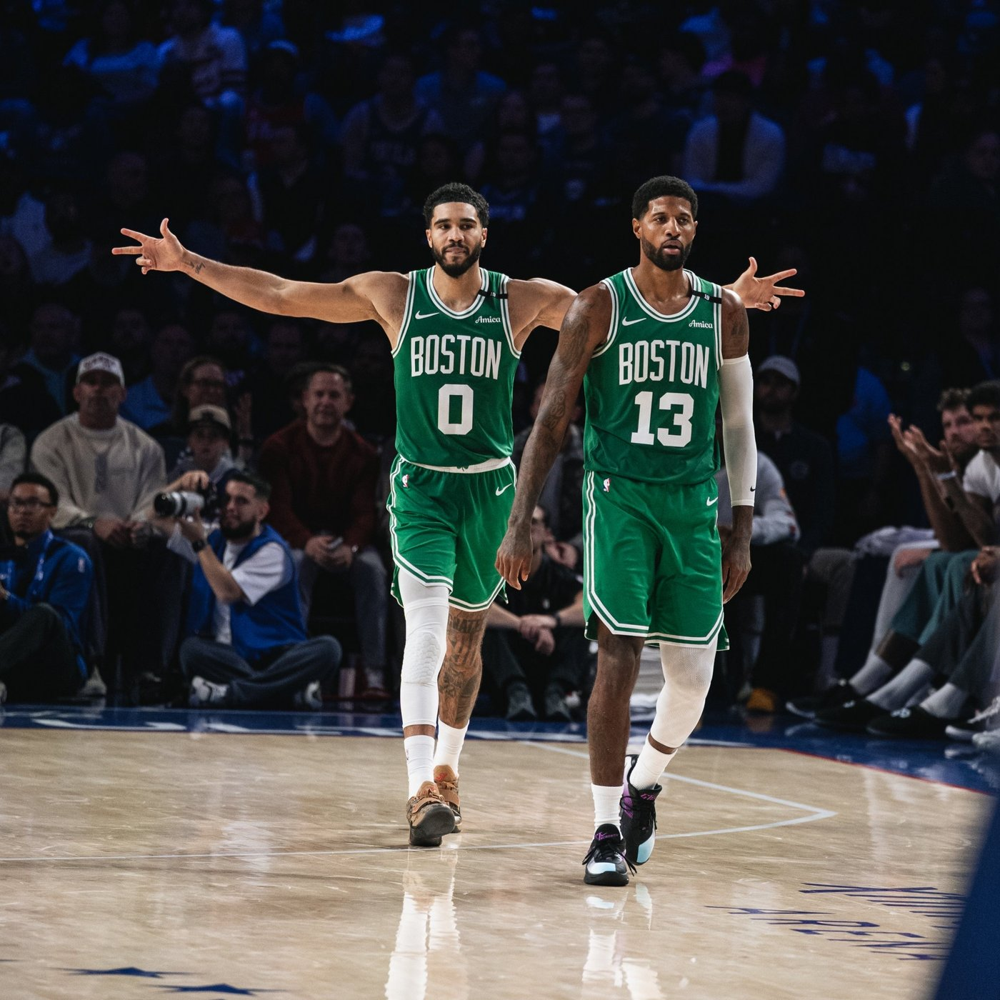

The Game · Philadelphia
PG Wins the Trade Game. Boston Takes the East.
Paul George came back to Philadelphia and dropped 36 on 22 shots. Jaylen Brown got nine. The Celtics hit 22 threes, won by 22 and walked out as the East's No. 1 seed.

This was the first meeting since the deal that sent George to Boston for Jaylen Brown. Brown spent 10 seasons in green and won Finals MVP in 2024. Before tip, the East-leading Sixers were 9-2 and Boston was 8-2, a half game back. Celtics 123, 76ers 101. Now it's Boston at 9-2 and Philly at 9-3.
The scouting read on George: efficient volume. He came in averaging 20.4 and took 22 shots, made 14 of them and went 6-of-11 from deep. That's 63.6% on volume, and it turns a showdown for first place into a 22-point road win.
Brown went 4-of-9 for 13 with 5 boards and 2 steals. Nine shots in the game you've had circled since the trade. That's a game-plan problem, not a talent problem. Tyrese Maxey was the only Sixer who got loose, 24 points on 8-of-12.
Boston led 62-51 at half and 94-70 after three, then won the fourth 32-19 behind threes from Payton Pritchard and George. Jayson Tatum added 21, 6 and 4 with 2 blocks. Four straight wins for the Celtics.
Scout's Note · Where it was won
Philly went 24-of-28 at the line. Boston took five free throws all night and still won by 22. That's what 22-of-49 from three (44.9%) and 28 assists on 48 makes does for you. Philadelphia went 11-of-37 from deep (29.7%), and Joel Embiid's 16 came on 2-of-9 shooting and 11-of-13 at the stripe. LeBron James: 11, 8 and 5 on 4-of-12. You don't beat a five-out team by living at the line.